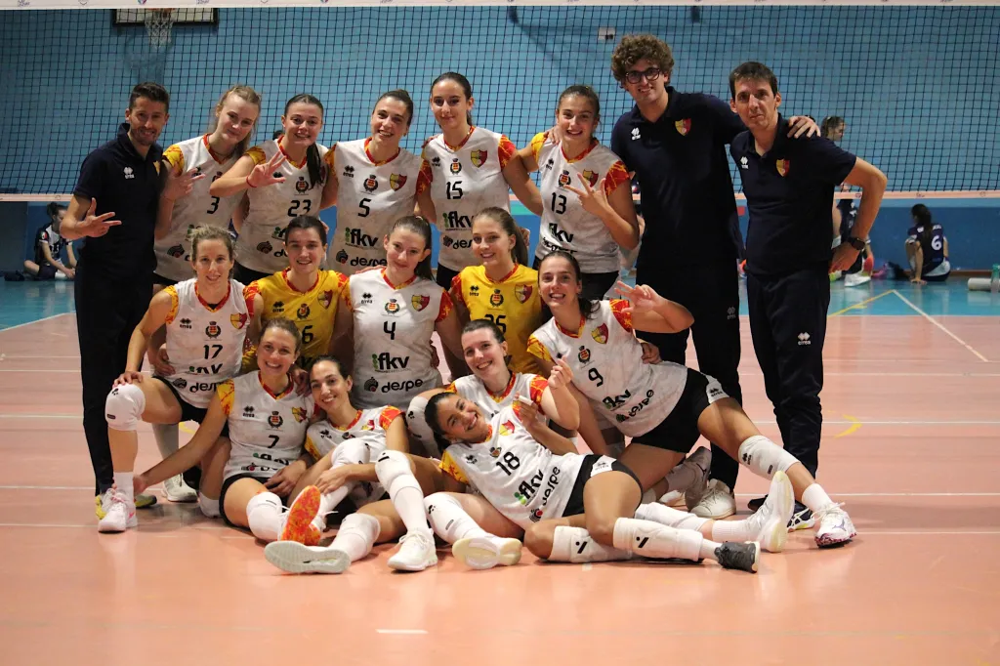

🏐 Sport & Passione
Scanzorosciate
Pallavolo
L'esperienza formativa e agonistica nel mondo del volley, dove la disciplina incontra lo spirito di squadra.

sports_volleyball Descrizione Attività
"La pallavolo non è solo uno sport, è imparare a cadere e rialzarsi in una frazione di secondo."
Durante il percorso con lo Scanzorosciate Pallavolo, ho sviluppato competenze tecniche specifiche, ma soprattutto ho imparato il valore della resilienza e del coordinamento collettivo sotto pressione.
Core Skills
- workspace_premium Leadership
- fitness_center Disciplina
- diversity_3 Teamwork
emoji_events
Scanzorosciate (BG)
Palestra scuole medie